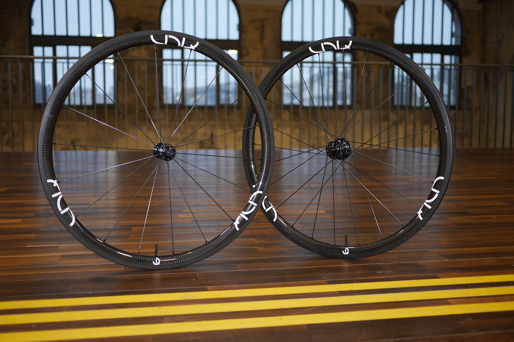

29 Juin, 2018
Précommandes des roues UNIQ For Road
Après plusieurs mois de test et quelques 3000 km, nous avons l’immense plaisir d’ouvrir les précommandes de nos roues UNIQ For Road au tarif de 799€. Pour plus d’information, n’hésitez pas à nous contacter à l’adresse mail: uniq.cycling@gmail.com.
Les roues tubeless UNIQ For Road sont livrées avec patins pour roues carbones et valves tubeless. Elles sont assemblées à la main en Bretagne à Plouzané à partir d’une sélection de composants de haute qualité.
Cette paire de roues se destine aux cyclistes recherchant le juste compromis entre performance et robustesse pour toutes les conditions. Freinage efficace sous la pluie, très faible prise au vent, dynamiques, et faciles à lancer sont autant de qualités remontées par les testeurs. Tous les résultats des tests sont disponibles sur notre page Facebook.
Les roues UNIQ For Road sont composées de moyeux Aivee fabriqués en Vendée, des rayons de référence Sapim CX-Ray et de jantes carbones spécifiées par nos soins.
29 Janvier, 2018
Naissance de UNIQ
UNIQ est une entreprise bretonne qui proposera des composants pour le cyclisme sur route et le VTT. Notre nom vient de notre objectif premier : apporter un produit unique dédié à chaque utilisation. Ainsi, nous avons développé une paire de roues pour la route, et suivra ensuite un modèle dédié à la compétition puis au VTT.

La démarche est partie du constat qu’une paire de roues carbone est un investissement conséquent après l’achat d’un vélo. UNIQ souhaite se démarquer en démocratisant les roues carbones et offrir un produit abouti pour un excellent rapport qualité/prix. Pour cela, nous sélectionnons avec attention des composants de haute qualité et optimisons les processus d’assemblage et coûts de fonctionnement.
Après des mois d’analyse et de recherche, UNIQ a le plaisir d’annoncer la disponibilité de sa première paire de roues pour test !
Cette paire de roues se destine aux cyclistes recherchant le juste compromis entre performance et robustesse pour toutes les conditions. Elles accompagneront parfaitement les entraînements du cyclosportif et satisferont le cyclotouriste adepte de longues distances à travers de beaux paysages.
Le test de notre paire de roues va durer plusieurs mois en fonction des retours de nos équipes. L’objectif est de proposer un produit robuste, performant et durable. Pour ce faire, nous recherchons des personnes de tout niveau du débutant au coursier confirmé. Merci de nous communiquer votre intérêt pour participer à cette phase d’évaluation à l’adresse : uniq.cycling@gmail.com